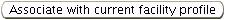
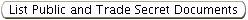

In this system, the term “application” is used to identify
several
types of document submittals, including permit applications,
permit-by-rule (PBR) notifications, request administrative permit
modifications (RAPM), permit revocation requests and extension
requests.
Applications are either completed by an applicant manually
(hard copy) or electronically. Hard copy submittals are entered
electronically by DO/LAA staff. The same application forms are
completed regardless of whether they are entered by DO/LAA staff from
hard copy applications or submitted electronically through the gateway
by a regulated community user. All Title V and PTI/PTIO applications are required to be submitted electronically by ANY Title V or “synthetic minor” source.
However, the ability for DO/LAA staff to enter a hard copy PTI/PTIO
application for all types of sources is retained in the system. “True
minor” sources will retain the option to submit hard copy PTI/PTIO
applications. Accepting a hard copy PTI/PTIO application from a Title V
or “synthetic minor” source would only occur under rare circumstances,
for example if an applicant is in hardship, as decided on a
case-by-case basis. There is the exception that Title V
applications are required to be submitted electronically and so cannot
be completed in hard copy form and entered electronically by DO/LAA
staff.
The Application
Detail page is the electronic depiction of all
of the application information that can be found in the hard copy form
except basic facility information which is contained in the Facility
Profile. Depending on whether you are viewing an
application that has
been submitted or you are viewing an application that has yet to be
submitted (i.e., an application in the process of being electronically
entered by DO/LAA staff), the application may be editable through this
page. The only applications that an internal user can view are those
that are submitted from an external user, or those that were submitted
in hard copy form and are entered electronically by DO/LAA staff. Once
the entire application has been validated and submitted, the
application will not be editable, nor will you be able to delete it.
This Help page will focus
on the fields you view on the
Application
Detail page and fields
that are editable IF you are entering a hard
copy application. Certain steps may need to be completed in other
sections of the system in order to access an application through the
Application Detail page for continued editing. These steps are
discussed briefly under the heading “How Are Applications
Electronically Entered by the DO/LAA?” below. The end of this Help page
provides links to several “Related Help Pages” that will allow direct
access to additional Help you may need during this process.
How are Applications Electronically Entered by the
DO/LAA?
Recall, DO/LAA staff will enter hard copy applications, except
Title V
applications will never be entered by the DO/LAA. In order to begin application entry the following steps are
necessary:
Facility
Profile: confirm existence or create.
Under the Facilities
tab perform a Facility
Search using the Facility
ID. If you are unable to locate the Facility ID
in the system, it is
likely the facility has not yet been created within the system and an
application cannot be entered until this is done. You must create the
facility using the second-level menu Create Facility
of the Facilities
tab. This is the first step of creating a Facility Detail.
Please
refer to the Help page for Create Facility
for further important
information concerning creating a facility.
Note that before entering an application, all emissions unit,
processes, control equipment and egress points must be created. This is
also accomplished through the Facility Detail
and its third-level
menu. Please refer to the Help page for Facility Detail
and Facility
Tree for further important information concerning these steps.
Facility
Profile -> Application(s):
begin application entry
Once you have
created, if necessary, and accessed the Facility Detail
page of the requesting facility, select the third-level menu Application(s)
link. The initiation of application entry occurs in this
section of the system. The instant you generate an application through
this link the system generates an Application Detail page.
For Help on
beginning the application entry, please refer to the Application(s) Help
page for more information.
When entering an application, you can
stop at any point and save your work by clicking at the
bottom of the
page or cancel your work by clicking .
Clicking will erase any
application information you just entered electronically. This button is
used to “reset” the data fields that have been changed since the last
save.
Notes and attachments entered into the system are not affected
by
clicking . These documents are permanent unless
deleted before
submission to the system.
If the application is saved but not submitted it will remain editable.
After the application has been submitted, the fields are locked and
cannot be edited except by users with Administrative privileges.
Applications being entered by DO/LAA staff that have been
saved but not submitted can continue to be edited by clicking at the
bottom of the page. Enter information as needed and or .
When you are ready to submit the completed
application, it will need to pass a validation process to ensure the
minimum information is included. These validation checks apply equally
to internal and external submittals. Therefore, if you are entering a
hard copy application it is important that all information contained in
the application is entered before submission. To Validate
click at the
bottom of the page. A pop-up box will appear displaying any issues
associated with the validation. The issue(s) must be resolved in order
for application submittal to occur.
Issues with validation are categorized as either ERRORs,
WARNINGs or
INFOs. ERRORs must be resolved before the document can be validated. If
you only experience WARNINGs or INFOs, the validation process will be
successful without the need to click validate again; however, WARNINGs
and INFOs may be viewed and corrected/changed before submission. If
changes are made after validation, it will be necessary to validate
again.
To navigate to any ERRORs, WARNINGs or INFOs, click on the brown
underlined hyperlink associated with the issue.
This will take you to
the page where it was detected. The page should open in the edit mode.
If it is an error, you will need to correct the error and navigate back
to the Application
Detail page to validate again or open the validation
pop-up using the toolbar at the bottom of your computer screen and move
on to the next error message hyperlink until all errors have been
corrected. WARNINGs and INFOs may be viewed by following the above
procedure. When viewing, you can determine if the information requires
a change or if you want to keep the information as originally
determined. WARNINGs typically may be more significant issues than
ERRORs.
Once the document passes validation, you will see the
following
validation successful message and a green checkmark at the top of the
Application Tree.
Once all issues are resolved, click to
complete the process.
You can locate an application and access an Application
Detail page throughout many of the system pages, most
usually through
the Application
Search or Facility
Profile pages.
Facility
Profile -> Application(s) third-level menu will
display a datagrid of all
applications for the specific facility.
Application
Search allows you
to search for available applications using many different search
criteria. This feature is available on the opening page for the
first-level menu called Applications.
For Help on this feature, refer
to the Applications
Search Help page. Applications that fit the search
criteria you have set will show up in the Request List
datagrid after
you have performed an Applications
Search.
Using either method, the datagrid will contain a column with
the
Request
number which is hyperlinked to the specific Application Detail
page. Click on the Request
number.
The datagrid will also contain a column named Submitted
identifying
either YES
or NO.
Electronically Submitted
If you view an application that has been submitted (Yes), it
will no
longer be editable. This feature is used to review the application and
begin preparing any necessary permit document.
Applications Not Yet Submitted Electronically
Applications being entered by DO/LAA staff that have not yet been
submitted (No)
remain editable. Applications being entered by external
users who have not yet submitted the application will not be viewable
until submission occurs.
The information you see on the Application Detail
page may depend on
the type of application you are viewing, or editing. The information
below is relevant to each request type available.
Date
application received
The date the signed hard copy application
was actually stamped into the DO/LAA or the date the electronic version
was submitted by an external user. This date will be the basis for
tracking all permit processing statistics.
Is
this a legacy State PTO Application
This is a legacy application
if it was received prior to the June 13, 2008 shut down of the old
STARS and PTIs 2000 systems. An application submitted after this date
is expected to comply with the validation requirements of system.
For
OEPA use only
This section identifies the reason(s) for the application. It is
populated automatically based on selections made at the emissions unit
level using the Application Tree. This is discussed below.
Purpose
of Application
This should contain an explanation of why the permit is being sought.
This text will be used in the public notice for any permit issued for
this application and; therefore, it may be edited for purposes of
accuracy and clarity.
Is
the purpose of this application to transition from
OAC Chapter
3745-77 (Title V) to OAC Chapter 3745-31 (PTIO)?
Used to identify when an application is being submitted for the purpose
of obtaining a permit that will transition a Title V facility into the
non-Title V program. You may edit by selecting either the Yes or No
radio button.
PER
Due Date
Each non-Title V facility that will be issued a PTIO
(including FEPTIO) will be able to choose from four days which day of
the year they will submit their annual PER (Permit Evaluation Report).
This selection is made in the first application because all
subsequent PTIOs issued for the facility will be given the same due
date. If a due date has not previously been established you may edit
this field by selecting from the picklist the due date the applicant
requested in their hardcopy application. After the first time it
is selected, the same due date should be entered in subsequent
applications. After a due date has been established in a PTIO,
the due date cannot be changed except by established procedures and by
a system administrator. If you have a facility requesting a
change to a due date contact Central Office.
Federal
Rules Applicability
The applicant will designate the applicability of certain federal
rules. If you are entering a hard copy application, you will enter the
data as submitted by the applicant through the available picklists. For
certain federal rules, if you select Subject to subpart
or Subject,
but
exempt, a Select
Subpart datagrid will appear where you will identify
appropriate Subpart(s). Click
and select the appropriate Subpart from
the picklist. If you need to identify more than one Subpart, click
until you have identified all the necessary Subparts. If you find it
necessary to make a change to a selected Subpart, you can select
another Subpart from the picklist at any time or you can delete the
entire Subpart by clicking on the box next to the Subpart, placing a
check mark in the box, and clicking . You must make these
selections or
the application will not validate.
Express
PTI/PTIO (optional)
This option is available for
facilities
that meet the criteria detailed below the heading. This field is
editable. If you are entering a hardcopy application the No radio
button will be the default selection automatically. If the applicant
identified yes in the hardcopy form, you will select the Yes
radio
button. You will then be prompted to select Yes or No (via
radio
buttons) as to whether or not the applicant is requesting the
application receive express processing. If you determine that the
facility does not qualify for an Express PTI/PTIO
processing consult
with your Supervisor/Manager on how to proceed.
Air Contaminant Sources in this Application This section will contain a datagrid that identifies summary
information of the emissions units that have been included in the
application. Specific information about the emissions units is found
by naviagating through the tree.
Trade Secret Information The
answer to the question in this section is populated automatically by
the system based on whether or not any information was identified as a
trade secret. In order to view trade secret information you will
need to request permission.
Permit
Application Contact
This is the contact information of the
person responsible for answering questions about this permit
application.
Attachments
You can view facility-wide specific
documents that have been attached to the application. The Public
Document and Trade Secret Document
columns of the datagrid are
hyperlinks that allow you to view the document.
If you are entering a
hardcopy application, any facility-wide documents must be attached to
the first page of the PTI/PTIO application in the Attachments
section.
Emissions unit specific documents such as EAC forms, process flow
diagrams and others should be attached on the pages dedicated the
specific emissions unit through the Application Tree (discussed below).
Additional attachments can be added by the DO/LAA by clicking . The
following pop-up window will appear with the ability to add both public
and trade secret documents (provided you have that role assigned to you
through the system administrator):
Enter a Description,
choosing the name of the document carefully
because this will be the document’s identifier in the system. Select
the Document
type from the picklist and upload the appropriate file. A Trade Secret File must have a
“public” and “secret” file submission.
Upload both versions to the system and use the Trade Secret
Justification box to enter the justification for trade
secret document
submittal. There must be a justification entered to validate
the
document. Click
to add the Attachment
or click
at any point to abort
the process of attaching a document. You will return to the PTI/PTIO
Application detail page where you can view your
document(s) in a
datagrid by clicking on the Attachment Type
hyperlink. The Attachment
ID
of the document
will be a hyperlink that generates the Attachment
pop-up where you can
make changes to the Description or
Attachment
Type of the Attachment
or where you can
delete the Attachment
Type
by clicking
. If document uploaded needs replaced
or the Trade
Secret Justification needs edited you must delete the Attachment
and upload it again.
Notes
Notes concerning the application submittal, application rejection,
additional information requests, or other information relevant to the
facility or application can be added by internal users. Click and a
pop-up will appear where you enter the note in the text box
and click . Click
at any point prior to saving to be returned to the Application
Detail page without generating the note. All notes are
available for public review and are kept as a public record. The text
for a note can be viewed as well as the date entered and who entered
the note. The first few words of the note will be displayed in this
datagrid as the Note
title. You can view notes by clicking on the Note
ID in the datagrid. You will also be able to edit a note
you created.
If the application has not yet been submitted, the edit
button will
be available to allow information contained on this page to be edited.
Click and fields within the page are changed to
editable fields. Enter
information as needed and click or .
If you are in edit mode, you can save the information in the
application without validating and/or submitting. Information entered
into the system and saved will be available for editing at future
dates.
If you are in edit mode this button cancels any application
information you just entered electronically. This button is used to
“reset” the data fields that have been changed since the last save.
Notes and attachments entered into the system are not affected by the
cancel button. These documents are permanent unless deleted before
submission to the system.
Once the application is saved or canceled the following unique buttons
appear:
Notice the edit button is available.
Once you select this button the screen will refresh to display the
image below.
Include
EUs by clicking on an EU ID under the Excluded EUs
list and . You
can also move ALL EUs by clicking .
Exclude
EUs
by
performing the same steps with the “remove” icons. Click to
complete the process or click to go
back to the Application
Detail page without
including or excluding any EUs you may have just moved.
Please note, emissions unit(s) may also be
selected individually by
clicking on the EU ID on the Application Tree denoted by at
the left of
the Application
Detail page. Click
at the bottom of the page to go to
the Emissions
Unit page. Additional information about the Emissions
Unit page can be found under the ApplicationTree section
of this Help page.
When using either method you have the option of copying data from
another emissions unit by selecting the EU ID from the Copy data from
EU picklist.
Selecting this button will delete all information associated with the
application.
Selecting this button will begin the validation process
to ensure the minimum requirements for application submittal are
completed. A pop-up box will appear displaying any issues associated
with the validation. These issues must be resolved in order for
application submittal to occur.
Once the application is validated it
may be submitted by selecting this button. Information that is
validated and subsequently submitted to the system by clicking is
not
editable after being accepted by the system unless you have
administrative rights.
Click this button to go to the Facility
Profile page for the facility. This will be the Facility Detail
that
existed at the time the application was first created. Therefore, if
changes have been made to the Facility Detail
since then, you will see
a red heading at the top of the page stating “**
Historical version.
Please note the facility inventory version start and end dates **”

Applications are associated with the Facility
Profile at the time the
application is created by DO/LAA staff. If the information in the Facility
Profile has been updated since then and it is relevant to
the
permit (emissions unit changes, ownership changes, etc), it is
necessary to re-associate the application with the most current Facility
Profile by clicking this button. It is very important to
consider this step prior to submitting any application on behalf of the
facility which submitted a hardcopy.
Buttons Unique for Applications After
Being Submitted
The moment an application is
submitted a workflow and Permit Detail
page will be generated allowing
DO/LAA staff to begin the permit process. Selecting this
button will allow you to generate a second workflow and Permit Detail
page for each time you select Yes
on
the pop-up generated when clicking this button. This will commonly be
used when you need to split up the emissions units from one application
so they may be issued in multiple permit documents. Refer to the Permit Detail Help page for details. It also may be
used in cases where the original permit instance was mistakenly closed. If
more than one is Permit
Detail page has been generated from this button you you will be able to see multiple Permit Number
items with the same Application Number in the datagrid in the third-level menu Permit(s) of the Facility Detail .
Selecting this button will take you to the Facility
Profile page.
This will be the Facility
Profile that existed at the time the
application was first created or updated using the button
prior to
submittal. Therefore, if changes have been made to the Facility Detail
since then, you will see a red heading at the top of the page stating
“** Historical version. Please note the
facility inventory version start and end dates.
**”
Selecting this button will retrieve a pop-up box containing non-Trade
Secret (public) documents associated with the application available for
download and printing.

Viewable only if you are granted access to view trade secret documents.
Selecting this button will retrieve a pop-up
box containing all documents associated with the application available
for download and printing.
Selecting this button will allow you to
generate a Zip file of all documents associated with the application.
The Application Tree contains a list of emissions
unit(s) associated with the facility. The emissions unit(s) are denoted
by the symbol when they are associated with the
application. Emissions
unit(s) located at the facility that are not associated with the
application are denoted by the symbol . Clicking on an EU symbol
will
generate the specific Emissions
Unit page where you can view specific
information about the emissions unit or, if editable, perform
additional application steps. At any point you can click
at the top of
the Application Tree to return to the Application Detail
page. Please refer to the Facility
Tree Help page for detailed information about this
feature.
Notice that there is a green checkmark ahead of the PTI/PTIO
Application header. This indicates that this application has validated
successfully and is either ready for submission to the system or has
already been submitted successfully.
If any icon in the Application
Tree has a
symbol in the icon, it has either not been validated or
there has been a Facility
Profile change that needs to be associated
with the application.
Add emissions units
To add additional emission unit(s) to an application that has not yet
been submitted, you can click on the emissions unit symbol and click
at the bottom of the Emissions
Unit page. You have the option of copying
data from another emissions unit by selecting the emissions unit ID
from the Copy
data from EU picklist.
Exclude emission units
To exclude an emission unit(s) that was originally included in the
application if the application has not yet been submitted, click on the
emissions unit symbol and click
at the bottom of the Emissions
Unit page.
Selecting this button will automatically remove this emissions
unit from the application and all data entered relevant to that
emissions unit will be removed. You will be taken to the Emissions Unit
page which will allow you to add the emissions unit back again if you
choose. Once you exclude the emissions unit the symbol will now be
represented as .
Once an emission unit is selected, the following application
information will be viewable and editable, when applicable, by clicking
at the bottom of the Emissions Unit
page.
Air
Contaminant Source Installation or Modification Schedule
This section is used to identify the reason the emissions unit is being
included in the application, e.g., it’s a new source or an existing
source being modified. When editing, only one selection for a given
emissions unit may be made by clicking on the appropriate radio button.
The following selections will generate additional steps:
New
Installation (construction has not begun)
If this radio button is selected you will be prompted to also enter
either a date when installation will begin or check the box identifying
it will occur after the permit is issued.
Initial
installation (construction already began and/or was
completed)
If this radio button is selected you will be prompted to also enter a
date when construction began or installation was completed AND the date
operation began, if applicable.
Modification
(which has not begun)
If this radio button is selected you will be prompted to also enter
previous permit numbers applicable to the emissions unit, either a date
when modification will begin or check the box identifying it will occur
after the permit is issued.
Modification
(already began and/or was completed)
If this radio button is selected you will be prompted to also enter
previous permit numbers applicable to the emissions unit, a date when
modification began or was completed AND the date operation began, if
applicable.
Reconstruction
If this radio button is selected you will be prompted to also enter an
explanation.
Other
If this radio button is selected you will be prompted to also enter an
explanation.
General
Permit check box
This box is selected if this is a general permit application. If a
general permit is available and applicable for this emissions unit, the
following will be displayed, or can be selected from a picklist, when
in edit mode:
The
higher level General Permit
Category. For example, Readymix
Concrete Batch Plants.
The
lower level General Permit Type. For
example, Truck
Mix (GP4.1). The designation in parenthesis is the
unique identifier for that type of general permit.
If an applicant is
applying for a general permit they will also be required to attach a
Qualifying Criteria document under the Attachments
heading.
Emissions
Information
The table identifies information from the applicant pertaining to
criteria pollutants and hazardous air pollutants (HAPs). When entering
an application, the information contained in the application must be
entered into this table as it appears in the application. The datagrid
at the bottom of the table identifies HAPs and toxic air contaminants
applicable to the emissions unit. When in edit mode you can add these
by clicking . A pop-up will be generated as follows:
You will select the pollutant from a picklist and enter
values as they
are contained in the application and click
automatically populating the
datagrid with the information. If necessary, the values can be changed
from the datagrid or the pollutant can be deleted by selecting the box
next to the pollutant and clicking .
Above the datagrid and below the table is the button. Click this button
after entering pollutants in the
datagrid to automatically calculate the Requested Allowable*
(ton/year)
column for both the Total
Hazardous Air Pollutants (HAPs) and Highest
Single HAP rows based on the pollutant entries. If you
make changes to
the pollutant datagrid after clicking it will be necessary to
click the button again to recalculate the allowables.
Best
Available Technology (BAT)
This box will identify the applicants proposed BAT and justification,
when required. If you are entering an application, complete the field
with the applicants information.
Process
Flow Diagram
For each emissions unit a process flow diagram must be attached on the Emissions
Unit page for validation. This will be viewable, or can be
attached when in edit mode, under the Attachments
section at the bottom
of the page.
Modeling
Information
As part of the application process, the applicant will determine if
modeling is required, and if modeling was performed, it will be
submitted and subsequently uploaded as an attachment under the Attachments
section at the bottom of the Emissions Unit
page. This
section of the Emissions
Unit page also identifies necessary egress
point information that is incorporated into the Facility Detail
in
order for the application to be complete and validated. You can click
on and
(click on blue arrow) to read details on the information that
must be included in the Facility
Profile. Refer to the Facility Detail
and Facility Tree Help pages for additional information on how to
electronically enter this information.
Request
Enforceable Restrictions
This section identifies if the facility is requesting state and
federally enforceable or state-only enforceable restrictions. If they
are requesting restrictions, this section will also identify a reason.
In edit mode, you can enter a selection through the pick list and when Yes
is selected, select the appropriate reason box as indicated in the
hard copy application.
EAC
Forms
For each emissions unit, an EAC form(s) must be attached on the Emissions
Unit page for successful validation. This will be
viewable, or can be attached when in edit mode, under the Attachments
section at the bottom of the page.
Attachments
You can view emissions unit specific documents that have
been attached to the application (e.g., EAC forms, process flow
diagrams, modeling). The Public Document
and Trade
Secret Document
columns of the datagrid are hyperlinks that allow you to view the
document.
If you are entering a hardcopy application, any emissions
unit specific documents must be attached to the corresponding Emissions
Unit page of the PTI/PTIO application in the Attachments
section.
Additional attachments can be added by the DO/LAA by clicking . The
following pop-up window will appear with the ability to add both public
and trade secret documents (provided you have that role assigned to you
through the system administrator):
Enter a Description,
choosing the name of the document carefully
because this will be the document’s identifier in the system. Select
the Document
type from the picklist and upload the appropriate file. A Trade Secret File must have a
“public” and “secret” file submission.
Upload both versions to the system and use the Trade Secret
Justification box to enter the justification for trade
secret document
submittal. There must be a justification entered to validate
the
document. Click
to add the Attachment
or click
at any point to abort
the process of attaching a document. You will return to the PTI/PTIO
Application detail page where you can view your
document(s) in a
datagrid by clicking on the Attachment Type
hyperlink. The Attachment
ID
of the document
will be a hyperlink that generates the Attachment
pop-up where you can
make changes to the Description or
Attachment
Type of the Attachment
or where you can
delete the Attachment
Type
by clicking
. If document uploaded needs replaced
or the Trade
Secret Justification needs edited you must delete the Attachment
and upload it again.
Emissions
Unit page buttons
When you are not in
edit mode, the following useful buttons are available at the bottom of
the Emission
Unit page:
: click this button and the Copy
EU Data page will open where you can
copy all data associated with another emissions unit over to the
emissions unit you are currently viewing. Clicking on an EU ID from the
Available
EUs list and click . You
can reverse the action by
performing the same steps with the “remove” icon. Click
to complete the
process.
: click this button to exclude the
emission unit you
are currently viewing from the application. Selecting this button will
automatically
remove this emissions unit from the application and all data entered
relevant to that emissions unit will be removed. You will return to the
Emissions
Unit page which will allow you to add the emissions unit
back
again if you choose. Once you exclude the emissions unit the symbol
will now be represented as .
Recall, Title V applications are required to be submitted
by the
applicant electronically; therefore, edit mode or changes by DO/LAA
staff are not possible. The application had to pass a validation check
to be submitted to Ohio EPA for you to view. The following describes
the fields that will be viewable during your application review.
Reason
for application
Identifies the reason for the application. Initial
is selected when a
Title V Permit has not been issued for the facility before. If Revision/Modification/Reopening
is identified it will also identify the
type: Reopening,
Rescind/Reissue, SPM
(significant permit modification), MPM
(minor permit modification), APA
(administratiave permit
amendment), or Off
permit change.
Summary
Identifies the explanation of why the permit is being sought. This text
will be used in the public notice for this permit.
Statutory
Agent
Identifies the Statutory
Agent as registered with the Secretary of
State. A Statutory
Agent is the person or corporation officially
designated by a corporation to receive service of process and other
official documents for the corporation. Every corporation is required
to name a Statutory
Agent when they incorporate in Ohio. It is possible
that if a Title V source owner or operator is not a corporation, they
will not have a Statutory
Agent. In such cases of a sole proprietor or
partnership, the individuals are the agent.
Potential
to Emit (PTE)
The table identifies information pertaining to criteria pollutants and
hazardous air pollutants (HAPs).
Criteria
Pollutants:
The EU Total
(PTE) column is automatically calculated by the system
based on PTE values entered by the applicant for each emissions unit
under the specific Emissions
Unit pages. This step is discussed under
the Application Tree section of this Help page below. The final column
will automatically indicate whether the facility is Major or
Non-Major.
Not
Applicable in this column indicates there is no PTE
entered for
that pollutant.
The Facility
PTE value may be entered for each
pollutant that has an EU
Total (PTE). This should be done when the Facility
PTE value does not equal the EU Total
(PTE). For example, if
multiple emissions units share a PTE value, the PTE value would be
identified for each individual emissions unit on the Emissions Unit
pages and would be summed together in the EU Total
(PTE) column. This
would be adjusted down to the actual Facility PTE
value and entered in
that appropriate column.
With regards to particulate matter, the table contains the following
pollutant types:
Currently, the particulate matter criteria pollutant threshold is based
on both PM10 and PM2.5 since both pollutants are subject to the
National Ambient Air Quality Standards (NAAQS). In addition, the NAAQS
inherently captures condensible particulate matter in addition to the
stack-filterable particulate matter. Accordingly, this Title V
application recognizes both filterable and condensible particulate
matter. IMPACT, at the emissions unit level, automatically
calculates the condensible fraction for any source category recognized
by USEPA that produces condensible particulate matter emissions (i.e.,
there is a federal emission factor for the SCC category). You can add a
source-specific calculated value if your source has been tested. Ohio
EPA recognizes the variability in these factors, and also recognizes
that a straight calculation of the condensible PM, NOx, and SO2
emissions can results in double counting. The Facility PTE
can be used
to adjust the EU
Total PTE value downward in the Facility PTE
column.
Hazardous
Air Pollutants (HAPs)
This section is automatically calculated based on information entered
by the applicant for each emissions unit under the specific Emissions
Unit pages. This step is discussed under the Application
Tree section of this Help page below.
Operations
Description
Identifies in detail the operations performed at the facility. This
information will be part of the statement of basis.
Clean
Air Act Provisions
If any of these provisions apply to the facility, the Yes
radio
button will have been selected. If Yes was
selected, the applicant may
have been prompted to answer a second question via additional radio
buttons.
Air Contaminant Sources in this Application This section will contain a datagrid that identifies summary
information of the emissions units that have been included in the
application. Specific information about the emissions units is found
by naviagating through the tree.
Facility-Wide
Requirements
This section contains two datagrids identifying the Facility-Wide
applicable requirements: State and Federally
Enforceable Requirements
and State
Only Enforceable Requirements. Emissions unit specific
requirements were added on the Emissions Unit
page(s) which is
discussed under the Application Tree section of this Help page.
The following fields are explained:
Allowable
Limit: identifies the numerical limit with units (e.g., 10
tons/year). May identify “None” if a limit is not applicable to this
requirement. For example, the malfunction rule.
Permit
Cite: if the requirement is contained in a permit issued
for
the facility, the permit number should be identified.
Rule
Cite: will identify the appropriate specific rule that is
the basis for the requirement.
Monitoring,
Record Keeping, Reporting and Testing: if there is a rule
or permit requirement for any of these fields, the requirement will be
identified in the appropriate box. If a requirement is identified, a Rule
Cite or a Permit
Cite, or both, must also be identified. For
example, they may have a semi-annual Reporting Requirement
based on
3745-21-09 (Rule
Cite) which was issued in PTI number P0000461 (Permit
Cite).
In
compliance?: if the facility is not currently in
compliance
with one or more of the requirements in this row of the datagrid, No
would have been selected. If No was
selected the Status
column of the
datagrid will contain a hyperlink entitled Not in compliance.
Click on
this link to see the Requirement
they are not in compliance with, for
example Reporting,
and the Proposed
Approach to Achieve Compliance.
Other
Compliance Obligations?: if the facility has other
compliance
obligations associated with the requirements in this row, Yes
would
have been selected. For example, if a more stringent emissions limit is
required by a Consent Decree. If Yes was
selected the Status
column of
the datagrid will contain a hyperlink entitled Other Compliance
Obligations. Click on this link to see the Requirement,
Limit
(if
applicable) and the Basis
for the Other
Compliance Obligation.
Proposed
Exemptions?: if the facility is proposing
an exemption from
one of the requirements identified in this row, Yes
would have been
selected. If Yes
was selected the Status
column of the datagrid will
contain a hyperlink entitled Proposed Exemptions.
Click on this link to
see the Requirement
and the Proposed
Exemptions.
Proposed
Alternative Limits?: if the facility is proposing an
alternative limit
from the requirement identified in this row, Yes
would have been
selected. If Yes
was selected the Status
column of the datagrid will
contain a hyperlink entitled Proposed Alternative
Limits. Click on this
link to see the Requirement
and the Proposed
Alternative Limits and Associated Basis.
Proposed
Changes to Testing?: if the
facility is proposing a change to testing from the Testing Requirement
identified in this row, Yes
would have been selected. If Yes was
selected the Status
column of the datagrid will contain a hyperlink
entitled Proposed
Changes to Testing. Click on this link to see the Requirement
and the Proposed
Changes to Testing.
Attachments
Facility-wide specific documents would have been attached to the first
page of the Title V Permit application in the Attachments
section.
Emissions unit specific documents such as EAC forms, process flow
diagrams and others should have been attached on the pages dedicated
the specific emissions unit (discussed below). The document will be
identified, and viewable, in a datagrid. The column marked Description
contains text entered by the applicant as a description of the
document. If the applicant identified the document contains a trade
secret, they were required to upload both a “public” and “secret” file.
These will be available for viewing by clicking on the Attachment Type
hyperlink under the respective columns (please note that only those
with
specific rights in the system will be able to view, and download from,
the Trade
Secret Document download column). Trade secret submissions
also require a Trade
Secret Justification (also viewable by clicking on
the hyperlinked text).
Notes
Notes concerning the application
submittal, application rejection, additional information requests, or
other information relevant to the facility or application can be added
by internal users. Click and a pop-up will appear where you enter
the
note in the text box and click . Click
at any point prior to saving to
be returned to the Application
Detail page without generating the note.
All notes are available for public review and are kept as a public
record. The text for a note can be viewed as well as the date entered
and who entered the note. The first few words of the note will be
displayed in this datagrid as the Note
title. You can view notes by
clicking on the Note
ID in the datagrid. You will also be able to edit
a note you created.
This button will take you back to the Facility Detail
page in the Facilities
tab. If changes have been made to the Facility Detail
since
the application was submitted you will see the historical version,
indicated by the heading ** Historical
version. Please note the facility inventory version
start and end dates. **
Selecting this button will retrieve a pop-up box containing non-Trade
Secret (public) documents associated with the
application available for download and printing.
Viewable only if you have rights to view Trade Secret Documents.
Selecting this button will
retrieve a pop-up box containing all documents associated with the
application available for download and printing.
Selecting this button will allow you to generate a Zip file of all
documents
associated with the application.
The moment an application is submitted a workflow and Permit Detail
page
will be generated allowing DO/LAA staff to begin the permit process.
Sselecting this button will allow you to generate a second
workflow and Permit
Detail page for each time you select Yes
on
the
pop-up generated when clicking this button. This should only be used in
the case where the original permit instance was mistakenly closed. Only
one permit instancce should be open for a Title V application. If more
than one is open, from the Permit Detail
page you will
see multiple Permit
Number items in the datagrid for the same Application
Numbers.
The Application Tree contains a list of emissions
unit(s) associated with the facility. The non-insignificant emissions
unit(s) are denoted by the symbol
while insignificant emissions unit(s)
are denoted by the symbol
when they are associated with the
application. Emissions unit(s) located at the facility that are not
associated with the application are denoted by the symbol .
Clicking on
an EU symbol will generate the specific Emissions Unit
page where you
can view specific information about the emissions unit. At any point
you can click at the top of the Application Tree
to return to the
Application
Detail page.
The following is a description of information
you will see on a specific Emissions Unit
page:
Normal
Operating Schedule (Non-insignificant emissions units only)
Identifies the normal Hours/day
and Days/year
operating schedule. If
the schedule is a trade-secret, the Yes
radio button will be identified
and justification will be indicated in the text box.
Potential
to Emit (PTE)
The table identifies information pertaining to criteria pollutants and
hazardous air pollutants (HAPs) for the specific emissions unit.
Criteria
Pollutants
The PTE
(ton/year) value was entered for each pollutant emitted by
the
emissions unit. These values are automatically summed for all emissions
units associated with the application and be populated into the EU
Total (PTE) column on the main facility Application Detail page.
If multiple emissions units share a PTE value, the same PTE(ton/year)
value would be identified for each individual emissions unit on their
respective Emissions
Unit pages.
For each PTE(ton/year)
a PTE
Determination Basis was entered. If this was identified as
a trade
secret the Reason
Determination Basis is a Trade Secret column
will contain a hyperlink where you can view the reason. Insignificant
emissions units will also have a column identifying the Rule Based
Applicable Requirements.
Hazardous
Air Pollutants (HAPs)
The datagrid at the bottom of the table identifies HAPs applicable to
the emissions unit. If the PTE Determination
Basis was identified as a
trade secret a justification for the trade secret will be identified
and viewable through the hyperlink. Insignificant emissions units will
also have a column identifying the Rule Based Applicable
Requirements.
The HAP-Single
Hazardous Air Pollutants and HAPs-Total Combined
Hazardous Air Pollutants rows would have been
automatically calculated
based on the pollutant entries made by the applicant.
Limitations
on Source Operations (Non-insignificant emissions units
only)
If there are any limitations on the operations of the specific
emissions unit that affect any of the PTE values listed on this page, Yes
would have been selected and a textbox will identify the
limitations.
Compliance
Monitoring Equipment/Enhanced
Monitoring (Non-insignificant emissions units only)
If the facility is required by Section 114(a)(3) to have certain
monitoring activities, the Yes
radio button should have been selected.
If Yes
was selected, a textbox will identify the monitoring. It will
also identify whether or not the emissions unit will comply with the
requirements on a timely basis.
Emissions
Unit-Specific
Requirements (Non-insignificant emissions units only)
The datagrids at the bottom of the page will identify State and
Federally Enforceable Requirements and State Only
Enforceable
Requirements. Refer to the “Facility-Wide
Requirements” bullet above
for Help on these fields.
Attachments
This section is where emissions
unit specific documents are attached to the application (e.g., EAC
forms, process flow diagrams, modeling). The document will be
identified, and viewable, in a datagrid. The column marked Description
contains text entered by the applicant as a description of the
document. If the applicant identified the document contains a trade
secret, they were required to upload both a “public” and “secret” file.
These will be available for viewing by clicking on the Attachment Type
hyperlink under the respective columns (please not that only those with
specific rights in the system will be able to view, and download from,
the Trade
Secret Document download column). Trade secret submissions
also require a Trade
Secret Justification (also viewable by clicking on
the hyperlinked text).
If the Application Tree contains an emissions
unit with one or more alternative operating scenarios
(non-insignificant emissions units only) it will be identified by:
When you click on this you will go to the Alternate or Multiple
Operating
Scenarios page where you will see information relevant to
the
alternative operating scenario. This information will be very similar
to that found on the specific Emissions Unit
page already described
above; however, it is relevant to the alternative operating scenario
that is being proposed.
If the Application Tree contains a grouping
of emissions units it will be identified by:
A grouping may have been
identified, for example, if the facility has multiple emissions units
under a single allowable emissions limit. Clicking on this will take
you to the Emissions
Unit Group page where you can see the emissions
units in that group. You will see information relevant to the group
emissions unit(s) applicable requirements. This information will be
very similar to that found on the specific Emissions Unit
page already
described above; however, it is relevant to the grouping only.
This notification is used to install, if applicable, and/or
operate an emissions unit(s) under a permit-by-rule (PBR) rather than a
traditional permit. If a facility requests to install and/or operate
under a PBR they must submit a complete PBR Notification. This includes
completing the information on the Application Detail
screen and
completing a Permit
by Rule Notification Supplement Form for the
specific PBR and attaching this to the notification. If DO/LAA staff
are entering a hard copy notification, the same steps should be
completed. In order for an emissions unit to be covered under a PBR, it
cannot be covered under any other type of permit, except a Title V Permit.
Therefore, it may be necessary to process a revocation of a previously
issued permit in order to operate under the PBR. Refer to the “Request
Permit Rescission” heading below for performing this step. The
following fields are viewable, and editable when entering an
application:
Date
Request Received: if you are entering this request
electronically, enter the date as postmarked on the notification
submitted by the facility.
Select the PBR
Reason from the picklist and click .
Select the emissions unit(s) that will be associated with
the
notification. In order to associate an emissions unit with an
application you must first have created the emissions unit in the Facility
Profile. If you need Help with this process refer to the
Help
pages for Facility Tree and Facility Detail.
You can associate an
emissions unit either by clicking on the
or by selecting the EU ID on
the Application Tree to the left of the screen. Both of these features
are discussed under the “PTI/PTIO Application Detail” heading of this
Help page.
After associating the emissions unit(s), when you view the
specific Emissions
Units page by clicking on the EU ID in the
Application Tree you will see a table of any active permits currently
applicable to the emissions unit. It will be necessary to revoke, or
partially revoke (only the portion of the permit the emissions unit is
subject to) these permit(s) (except a Title V Permit). Refer to the
“Request Permit Rescission” heading below for performing this step.
Return to the Application Detail
page by clicking on the
hyperlink at the top of the Application Tree. You will notice in the
center of the
page a Download PBR forms
from here hyperlink. Click this link,
download the appropriate Permit by Rule
Notification Supplement Form.
You will complete this form electronically, save it to your computer
and upload it as an Attachment
to this notification request. Attachments
are discussed below. In lieu of this step, you can scan the full PBR
Notification form and attach it as a supplemental form as discussed
below.
Attachments:
in order to validate and submit, the appropriate Permit
by Rule Notification Supplement Form must be attached.
Click ,
select
the Attachment
Type from the picklist and enter a Description,
choosing
the name of the document carefully because this will be the document’s
identifier in the system. Upload the document and click . You
will return to the PTI/PTIO
Application detail page where you can view your
document(s) in a
datagrid by clicking on the Attachment Type
hyperlink. The Attachment
ID
of the document
will be a hyperlink that generates the Attachment
pop-up where you can
make changes to the Description or
Attachment
Type of the Attachment
or where you can
delete the Attachment
Type
by clicking
. If document uploaded needs replaced
or the Trade
Secret Justification needs edited you must delete the Attachment
and upload it again.
If you are still in edit mode, click .
Notes
Notes concerning the
notification submittal, notification rejection, additional information
requests, or other information relevant to the facility or notification
can be added by internal users. Click
and
a pop-up will appear where you enter the note in the text box and click
. Click at
any point prior to saving to be returned to the Application Detail
page
without generating the note. All notes are available for public review
and are kept as a public record. The text for a note can be viewed as
well as the date entered and who entered the note. The first few words
of the note will be displayed in this datagrid as the Note
title. You
can view notes by clicking on the Note ID
in the datagrid. You will
also be able to edit a note you created.
Additional buttons will be available depending on whether the
application has or has not been submitted. If you need additional
information on these buttons they are discussed in detail under the
“PTI/PTIO Application Detail” heading of this Help page.
This feature is used for changes to permits that qualify for a
PTI/PTIO
Administrative Modification, Title V
Administrative Permit Amendment,
or a Title V
Off-Permit Change. In order to request one of these
changes, the facility must have been issued the appropriate permit.
This application process is fairly simple and all three types are
nearly identical. The PTI/PTIO
Administrative Modification will be used
as an example. The following fields are viewable, and editable when
entering an application:
Date
Request Received: if you are entering this request
electronically, enter the date as postmarked on the request submitted
by the facility.
Modification
Request Information: a summary of the reason this permit
is being modified.
Modification
Request Contact: the phone number and email of the
person that will be able to answer questions concerning this request.
Attachments
To add an attachment, click .
A pop-up will appear where you will
select the Attachment
Type from the picklist and enter a Description,
choosing the name of the document carefully because this will be the
document’s identifier in the system. Upload the document and click .
You will return to the PTI/PTIO
Application detail page where you can view your
document(s) in a
datagrid by clicking on the Attachment Type
hyperlink. The Attachment
ID
of the document
will be a hyperlink that generates the Attachment
pop-up where you can
make changes to the Description or
Attachment
Type of the Attachment
or where you can
delete the Attachment
Type
by clicking
. If document uploaded needs replaced
or the Trade
Secret Justification needs edited you must delete the Attachment
and upload it again.
Select the emissions unit(s) that will be associated with
the
request. In order to associate an emissions unit with an application
you must first have created the emissions unit in the Facility Detail.
If you need Help with this process refer to the Help pages for Facility
Tree and Facility
Profile. You can associate an emissions unit either
by clicking on or by selecting the EU ID on the
Application Tree to
the left of the screen. Both of these features are discussed under the
“PTI/PTIO Application Detail” heading of this Help page.
Return to the Application Detail
page by clicking on the
If you are still in edit mode, click .
Notes
Notes concerning the notification submittal,
notification rejection, additional information requests, or other
information relevant to the facility or notification can be added by
internal users. Click
and a pop-up will appear where
you enter the note in the text box and click . Click
at any point prior
to saving to be returned to the Application Detail
page without
generating the note. All notes are available for public review and are
kept as a public record. The text for a note can be viewed as well as
the date entered and who entered the note. The first few words of the
note will be displayed in this datagrid as the Note
title. You can view
notes by clicking on the Note ID
in the datagrid. You will also be able
to edit a note you created.
Additional buttons will be available depending on whether the
application has or has not been submitted. If you need additional
information on these buttons they are discussed in detail under the
“PTI/PTIO Application Detail” heading of this Help page.
The purpose of this action is to extend the installation
portion of an
issued PTI or PTIO past the statutory deadline date of 18 months for
construction to begin. If the extension is not applied for or granted
prior to the 18 month mark, the PTI or PTIO expires and a new PTI or
PTIO must be applied for and obtained before construction can begin.
A granted permit extension is a one time extension of the
construction
date for up to 12 months, providing a total of 30 months from the
original issuance date of the PTI/PTIO. The following fields are
viewable, and editable when entering the request:
Request
Received Date: enter the date as postmarked on the request
submitted by the facility.
Termination
Date: enter the date requested by the facility, up to 12
months.
Permit
Number: Not editable. This is the permit number and
issuance
date. It is used as a reference for determining the final date of the
extension.
Disposition:
Not editable. Pending
– means the permit extension is
not yet granted.
Attachments:
To add an attachment, click .
A pop-up will appear where you will
select the Attachment
Type from the picklist and enter a Description,
choosing the name of the document carefully because this will be the
document’s identifier in the system. Upload the document and click . You
will return to the PTI/PTIO
Application detail page where you can view your
document(s) in a
datagrid by clicking on the Attachment Type
hyperlink. The Attachment
ID
of the document
will be a hyperlink that generates the Attachment
pop-up where you can
make changes to the Description or
Attachment
Type of the Attachment
or where you can
delete the Attachment
Type
by clicking
. If document uploaded needs replaced
or the Trade
Secret Justification needs edited you must delete the Attachment
and upload it again.
If you are still in edit mode, click .
Notes
Notes concerning the notification submittal, notification rejection,
additional information
requests, or other information relevant to the facility or notification
can be added by internal users. Click and
a pop-up will appear where you enter the note in the text box and click
. Click
at any
point prior to saving to be returned to the Application Detail
page
without generating the note. All notes are available for public review
and are kept as a public record. The text for a note can be viewed as
well as the date entered and who entered the note. The first few words
of the note will be displayed in this datagrid as the Note
title. You
can view notes by clicking on the Note ID
in the datagrid. You will
also be able to edit a note you created.
The following sections are only available after the extension
request
is submitted by clicking .
Invoice:
Again, this section is available only after an extension
request is submitted and is not editable. The fee is determined within
the program.
Issuances:
Again, this section is available only after an extension
request is submitted. The issuance of a letter to the facility
informing them of the request approval or denial will be available in
this field. If you click on the ID number, the document will open.
button: If the request does not meet
the requirements for a permit
extension it can be denied. If you choose this option the request will
be denied, but you MUST continue the workflow to the denial stage. The
workflow associated with the request must be finished even though the
request is denied.
button: The button ends the
request. The workflow associated with the
request must be finished even though the request is dead-ended.
Additional buttons will be available depending on whether the
request
application has or has not been submitted. If you need additional
information on these buttons they are discussed in detail under the
“PTI/PTIO Application Detail” heading of this Help page.
The system supports revocation requests for all permit types.
The
Application
Detail page for this feature consists of the following
fields:
Request
Received Date: Enter or select the date according to the
date the request was “date
stamped” into the office. If this is for a Permit by Rule
Notification
that was received electronically, the date would be the date the
notification was submitted in the system.
RPR
reason: Select the reason for the revocation request from
the picklist.
Permit
Number: This is the permit that the revocation request is
associated with. This
is not editable.
Rescind
entire permit: This option is available to revoke the
entire permit, for example if
the facility shutdown or if the emissions unit(s) affected by the
revocation is the only emissions unit(s) in the permit. Select the box
placing a checkmark in it.
Basis
For Rescind: This field will only appear if the Rescind entire permit
check box is
selected. Enter the basis into the text box.
Associate
emissions unit(s): If the Rescind
entire Permit is not selected, you must select at least
one emissions unit to associate with this request. Select the emissions
unit(s) that will be associated with the request. You can associate an
emissions unit either by clicking on the
or by selecting the EU ID on
the Application Tree to the left of the screen. Both of these features
are discussed under the “PTI/PTIO Application Detail” heading of this
Help page. Return to the Application Detail
page by clicking on the hyperlink at the
top of the Application Tree.
If you are still in edit mode, click .
Attachments:
You can view or attach documents associated with the
request through
the Attachments
datagrid. Click to generate a pop-up where you can enter a
Description,
choosing the name of the document carefully because this will be the
document’s identifier in the system and upload the
document. The Attachment
ID
of the document
will be a hyperlink that generates the Attachment
pop-up where you can
make changes to the Description or
Attachment
Type of the Attachment
or where you can
delete the Attachment
Type
by clicking .
Click
on the Document
hyperlink to open and view the document attached.
Notes:
Notes concerning the request can be added by internal
users. Click and a
pop-up will appear where you enter the note in the text box and click . Click
at
any point prior to saving to be returned to the Application
Detail page without generating the note. All notes are
available for
public review and are kept as a public record. The text for a note can
be viewed as well as the date entered and who entered the note. The
first few words of the note will be displayed in this datagrid as the Note
title. You can view notes by clicking on the Note ID
in the
datagrid. You will also be able to edit a note you created.
Issuances:
This section is available only after a request for
permit revocation is
submitted. The Issuance table is not editable for general users at the
DO/LAA level, but information concerning the issuance of the revoked
permit may be viewed.
The system supports intent to relocate (ITR) requests for only portable sources.
TThere are three types of requests: Intent to relocate to site not pre-approved, Relocate to pre-approved site, and Site pre-approved (for first gaining pre-approval to be able to use the Relocate to pre-approved site option):
Intent to relocate to site not pre-approved
is used for any portable facility that has not had a site pre-approved
and the ITR must be submitted by the company 30 days prior to the date
of the proposed relocation.
Relocate to pre-approved site is used for any
portable facility that has undergone pre-approval for a particular
site. They may relocate to the new lcoation after the site
pre-approval process has been completed. The ITR only needs to be
received 15 days prior to the date of the proposed relocation and does
not need to be public noticed (because it has already been public
noticed during the pre-approval process.) When
the DO/LAA receives aRelocate to a pre-approved site notice, they will complete this
electronic request form confirming that pre-approval did occur by searching for aSite pre-approved notice in the system or in the facility's hardcopy files.
Site pre-approvedis used by the facility to gain the pre-approval in order to use the
second option. When the DO/LAA receives a pre-approval notice, they
will complete this electronic request form which will initiate the
workflow resulting in the public notice process.
The
Application
Detail page for this feature consists of the following
fields of which many are entered at the time the notification is entered; however all fields are editable except Date Request Submitted:
Date Request
Received: The date according to the
date the request was “date
stamped” into the office.
Date Request Submitted: After review of the ITR from the Application Detail
page, the DO/LAA will confirm the information, edit as needed then
submit. This field will automatically be updated with the date once
submitted through this procedure.
ITR Form Complete: This checkbox is selected, if after review of the ITR from the requester, it is determined to be complete.
Facility Compliant: This checkbox is selected upon determination that the facility is in compliance with its permit(s).
JFO Recommendation:
The Jurisdiction Field Office (JFO) is the DO/LAA in the with
jurisdiction of the the relocated site. Selected from a picklist; Approve, Approve with Conditions, or Deny. If Approve with Conditions is selected, additional information will be entered in the text box discussed below.
Request Disposition: Selected from a picklist; Approved, Approved conditionally, Denied, Notification Received, or Returned. Notification Received should ONLY be used whenRelocate to pre-approved site is the type of notification being entered
and it is confirmed that a site was pre-approved. IF the site has not
been pre-approved and you received a 15-day notice to relocate to
pre-approved site, you should still enter the request but selectReturnedand return it to the requestor.
Future Address: The address where the source will be relocated. If more than one address is being requested for pre-approval, enter all here.
Target County:
The county where the source will be relocated. If there is more than
one address request that covers more than one county, select one county
here and identify the other applicable county(s) in the Future Address box.
Text box options:
List pre-Approved Locations: Only for Site pre-approved requests. Entered when the JFO Recommendation is not denied. Identifies the pre-approved location.
List pre-Approved Locations and Additional Conditions: Only for Site pre-approved requests. Entered when the JFO Recommendation is not denied. Identifies the pre-approved location and when Approve with Conditions is selected from the JFO Recommendation, the conditions are entered.
Additional Conditions: Only for Intent to relcoate to site not pre-approved requests. Entered when the JFO Recommendation is not denied. When Approve with Conditions is selected from the JFO Recommendation, the conditions are entered.
Attachments:
You can view or attach documents associated with the
request through
the Attachments
datagrid. Click to generate a pop-up where you can enter a
Description,
choosing the name of the document carefully because this will be the
document’s identifier in the system and upload the
document. The Attachment
ID
of the document
will be a hyperlink that generates the Attachment
pop-up where you can
make changes to the Description or
Attachment
Type of the Attachment
or where you can
delete the Attachment
Type
by clicking .
Click
on the Document
hyperlink to open and view the document attached.
Notes:
Notes concerning the request can be added by internal
users. Click and a
pop-up will appear where you enter the note in the text box and click . Click
at
any point prior to saving to be returned to the Application
Detail page without generating the note. All notes are
available for
public review and are kept as a public record. The text for a note can
be viewed as well as the date entered and who entered the note. The
first few words of the note will be displayed in this datagrid as the Note
title. You can view notes by clicking on the Note ID
in the
datagrid. You will also be able to edit a note you created.
Make
sure the information is entered carefully. The fields will be used by
Central Office to popluate templates to prepare the appropriate
documentes and automiatically public notice the information in the
target county. Once you have entered the informaiton in edit mode,
click . You will see three buttons available, , , and . Use
if you need to make further changes. Use to remove the request
completely. Once all information is entered and ready use which will initiate a workflow. Once the workflow is initiated by clicking ,
the DO/LAA should go to the workflow task and sign off indicating the
appropriate decision made. Only after DO/LAA sign off will the
workfow progress to Central Office to prepare the appropriate documents.


 and
and 
 . The
following pop-up window will appear with the ability to add both public
and trade secret documents (provided you have that role assigned to you
through the system administrator):
. The
following pop-up window will appear with the ability to add both public
and trade secret documents (provided you have that role assigned to you
through the system administrator): to add the Attachment
or click
to add the Attachment
or click  at any point to abort
the process of attaching a document. You will return to the PTI/PTIO
Application detail page where you can view your
document(s) in a
datagrid by clicking on the Attachment Type
hyperlink. The Attachment
ID
of the document
will be a hyperlink that generates the Attachment
pop-up where you can
make changes to the Description or
Attachment
Type of the Attachment
or where you can
delete the Attachment
Type
by clicking
at any point to abort
the process of attaching a document. You will return to the PTI/PTIO
Application detail page where you can view your
document(s) in a
datagrid by clicking on the Attachment Type
hyperlink. The Attachment
ID
of the document
will be a hyperlink that generates the Attachment
pop-up where you can
make changes to the Description or
Attachment
Type of the Attachment
or where you can
delete the Attachment
Type
by clicking  . If document uploaded needs replaced
or the Trade
Secret Justification needs edited you must delete the Attachment
and upload it again.
. If document uploaded needs replaced
or the Trade
Secret Justification needs edited you must delete the Attachment
and upload it again.
 at
the left of
the Application
Detail page. Click
at the bottom of the page to go to
the Emissions
Unit page. Additional information about the Emissions
Unit page can be found under the ApplicationTree section
of this Help page.
at
the left of
the Application
Detail page. Click
at the bottom of the page to go to
the Emissions
Unit page. Additional information about the Emissions
Unit page can be found under the ApplicationTree section
of this Help page.
 button
prior to
submittal. Therefore, if changes have been made to the Facility Detail
since then, you will see a red heading at the top of the page stating
“** Historical version. Please note the
facility inventory version start and end dates.
**”
button
prior to
submittal. Therefore, if changes have been made to the Facility Detail
since then, you will see a red heading at the top of the page stating
“** Historical version. Please note the
facility inventory version start and end dates.
**”
 when they are associated with the
application. Emissions
unit(s) located at the facility that are not associated with the
application are denoted by the symbol
when they are associated with the
application. Emissions
unit(s) located at the facility that are not associated with the
application are denoted by the symbol  symbol in the icon, it has either not been validated or
there has been a Facility
Profile change that needs to be associated
with the application.
symbol in the icon, it has either not been validated or
there has been a Facility
Profile change that needs to be associated
with the application. (click on blue arrow) to read details on the information that
must be included in the Facility
Profile. Refer to the Facility Detail
and Facility Tree Help pages for additional information on how to
electronically enter this information.
(click on blue arrow) to read details on the information that
must be included in the Facility
Profile. Refer to the Facility Detail
and Facility Tree Help pages for additional information on how to
electronically enter this information. : click this button and the Copy
EU Data page will open where you can
copy all data associated with another emissions unit over to the
emissions unit you are currently viewing. Clicking on an EU ID from the
Available
EUs list and click . You
can reverse the action by
performing the same steps with the “remove” icon. Click
to complete the
process.
: click this button and the Copy
EU Data page will open where you can
copy all data associated with another emissions unit over to the
emissions unit you are currently viewing. Clicking on an EU ID from the
Available
EUs list and click . You
can reverse the action by
performing the same steps with the “remove” icon. Click
to complete the
process. . You
will return to the PTI/PTIO
Application detail page where you can view your
document(s) in a
datagrid by clicking on the Attachment Type
hyperlink. The Attachment
ID
of the document
will be a hyperlink that generates the Attachment
pop-up where you can
make changes to the Description or
Attachment
Type of the Attachment
or where you can
delete the Attachment
Type
by clicking
. You
will return to the PTI/PTIO
Application detail page where you can view your
document(s) in a
datagrid by clicking on the Attachment Type
hyperlink. The Attachment
ID
of the document
will be a hyperlink that generates the Attachment
pop-up where you can
make changes to the Description or
Attachment
Type of the Attachment
or where you can
delete the Attachment
Type
by clicking 
 , and
, and